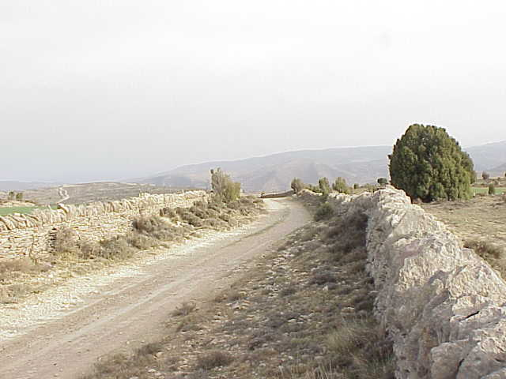
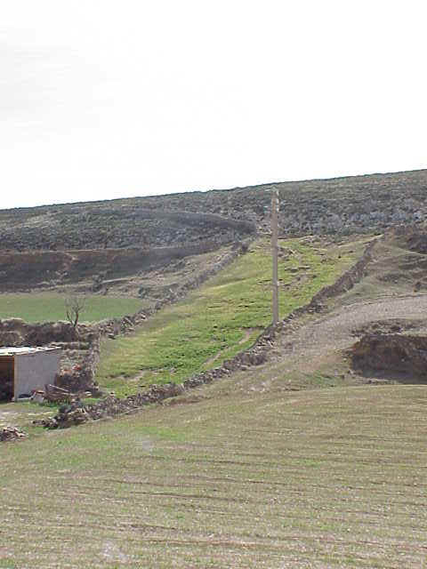

Sus vías pecuarias
En Olocau del Rey las vías pecuarias se asemejan a una tela de araña cuyo centro es el pueblo: existen 4 veredas y 13 coladas-azagadores.
La trashumancia durante la Baja Edad Media tuvo una indudable importancia económica y social. Prueba de ello es el apoyo prestado por los distintos monarcas de la época, creando, amparando y fortaleciendo a las distintas agrupaciones pastoriles existentes (Juntas, Ligallos, Mestas...) y designando justicia en numerosos municipios y agrupaciones. Con el tiempo pasaron a ser poderosos gremios que en la Edad Moderna desarrollaron un destacado mercado lanero, lo cual tuvo un claro reflejo en la villa de Olocau, pues contó con un importante centro comercial, denominado la Cofradía o Mercado de la lana.
Todo ello convirtió a las vías pecuarias en la mejor red de comunicación económica. La aparición del ferrocarril, junto con la abolición de los grandes gremios y luego la desamortización comunal, hizo que quedaran en desuso en los comienzos de la Edad Contemporánea, y ello produjo el decaimiento de su uso en los grandes recorridos. En la actualidad se han convertido en un legado histórico, único en Europa, que además de seguir prestando su servicio al desplazamiento de ganados, son unos magníficos corredores ecológicos que favorecen la migración, la distribución geográfica y el intercambio de las especies silvestres, muy utilizados como rutas verdes y recorridos a pie o en bicicleta.


Podría decirse que en Olocau del Rey sus vías pecuarias se asemejan a una tela de araña cuyo centro es el pueblo: existen 4 veredas y 13 coladas-azagadores. La más ancha es la Colada-Azagador de la Fuente de la Gazulla a Tronchón y la más larga, la Vereda de San Joaquín o de les Refoyes a Castellote.
Veredas
- Vereda del Tossal Gros a Mirambel
- Vereda del Toll del Fonoll a Tronchón
- Vereda de San Joaquín o de les Refoyes a Castellote
- Vereda del Castellar
Coladas-azagadores
- Colada-Azagador de Bordón a La Cuba
- Colada del Mas Blanco
- Colada-Azagador del Royo
- Colada-Azagador del camino de La Mata
- Colada-Azagador de Torre la Fruta a la Canaleta
- Colada-Azagador de Torre la Fruta al Mas de Ripollés
- Colada-Azagador de Torre la Fruta a Torre Algares
- Colada-Azagador de la Fuente de la Gazulla a Tronchón
- Colada-Azagador del Bobalar
- Colada-Azagador de la Fuente de Borraz
- Colada-Azagador del Descansadero del Lavadero al Castillo
- Colada-Azagador de la Canaleta a Peña Redonda
- Colada-Azagador del Cementerio
Vereda del Tossal Gros a Mirambel
Esta vía pecuaria inicia su recorrido por este término municipal procedente del de La Mata de Morella, a la altura del M-9 del deslinde entre estos dos municipios. En este momento atraviesa la "Colada-Azagador de Bordón a La Cuba". Deja el "Molino Royo" a su derecha y toma dirección W entre cultivos a la derecha y el río Cantavieja a la izquierda.
Deja a su derecha unas granjas y se le separa siguiendo un barranco la "Colada-Azagador del Royo". Avanza como viene en la partida "Torre Félix".
Se le separa por la derecha la "Colada-Azagador de Torre la Fruta a Torre Algares" siguiendo el barranco de Malvaje. Deja a los pocos metros en su margen derecho la masía de "Torre la Fruta".
Continúa como viene discurriendo ahora por la partida "Torre la Fruta". Pasa por entre unas granjas, separándosele más adelante por la derecha la "Colada-Azagador de Torre la Fruta al Mas de Ripollés". Avanza y llega a la confluencia de la carretera CS-V-8421, con la que se dirige a Mirambel y Cantavieja. A esta altura, al tiempo que se le separa la "Colada-Azagador de Torre la Fruta a la Canaleta", finaliza su recorrido por Olocau al cruzar el río Tornos e introducirse en Mirambel (Teruel).
A lo largo de todo su trazado se pueden observar restos de paredes de piedra, a ambos lados, que nos señalan su itinerario.
Esta vía pecuaria tiene una longitud aproximada de 2.800 m.
Vereda del Toll del Fonoll a Tronchón
Esta vereda inicia su recorrido por este término municipal por el M-3T con los municipios de Todolella y La Mata, siguiendo el trazado del barranco de "Crianzón". Avanza por el partitérminos con Todolella y el barranco citado un tramo, llevando por su izquierda la partida "Las Lomas".
A la altura de la masía "Torre Julián", que queda dentro de Todolella, pasa a discurrir íntegramente por este último término municipal, por la margen derecha del barranco de "Crianzón".
Pasado el tramo anterior vuelve a coger el partitérminos ya nombrado y por lo tanto a introducirse en Olocau. Atraviesa la carretera CS-V-8422 por debajo de un puente situado a la altura de su km 8,700 y sigue como viene hasta llegar a la confluencia de los barrancos de "Crianzón" y de "Mas de Patirás" o de "Torre Arco". Al otro lado de la carretera se le incorpora por la izquierda un ramal de la "Colada-Azagador de Bordón a La Cuba".
En el punto anterior se introduce completamente en este municipio para discurrir siguiendo el trazado del último de los barrancos citados con dirección W, entre las partidas "Torre Morraja" a la izquierda y "El Tarro" a la derecha.
A la altura del "Mas de Patirás", que queda a unos 50 m a su derecha, se desvía del cauce del barranco por la izquierda para ascender entre paredes al "Alto de Torre Morraja". Cuando se desvía del barranco cruza la "Colada-Azagador de Bordón a La Cuba".
Llega al "Descansadero de Torre Morraja", de unos 10.300 m² de extensión y delimitado por paredes de piedra. Sale del descansadero anterior con pared por su derecha y dirección W-SW. Avanza de esta forma por el alto del cerro llevando por su izquierda la partida "Pinellos" y por su derecha la de "Umbría".
Desciende del alto entre paredes y por divisoria de aguas en busca de la carretera CS-V-8421, la cual cruzará aproximadamente por su km 12,300. Al otro lado de la carretera pasa a ascender, con dirección S-W y entre paredes, al alto conocido como "Royo". En este alto se le separa por la izquierda la "Colada-Azagador del Royo". Desciende a continuación por la divisoria de aguas y ya sin paredes hacia el "Descansadero del Lavadero", de unos 10.300 m² de extensión y delimitado por paredes de piedra.
Enlaza con el camino de Olocau del Rey a La Mata y pasa a discurrir siguiéndolo. A la altura del barranco de "La Tejería" se le separa por la derecha la "Colada-Azagador de la Canaleta a Peña Redonda". Pocos metros más adelante se separa del camino por el que viene, por el que continúa otra vía pecuaria, la "Colada-Azagador del camino de La Mata".
Gira a la izquierda, cruza el barranco de "Malvaje" y asciende hasta cruzar la carretera CS-8100, aproximadamente por su km 3,500. Lleva por su izquierda la partida "Canaleta".
Al otro lado de la carretera asciende en la partida "Naranja" en dirección al alto del mismo nombre. Lleva en este ascenso pared de piedra por su izquierda en algunos puntos. En el alto deja a su derecha la ermita "Virgen de la Naranja" y pasa a discurrir en ascenso suave por la cresta de la loma. Lleva por su derecha la partida "Naranja" y por la izquierda la de "Torre Algares".
Deja a su izquierda el "Masico Blas", llevando ahora pared por su derecha. Finaliza poco más adelante su recorrido por este término municipal al llegar al partitérminos con el de Tronchón.
Esta vía pecuaria tiene una longitud aproximada de 8.200 m y su anchura varía sobre los 20 m.
Vereda de San Joaquín o de les Refoyes a Castellote
Tiene una longitud aproximada de unos 9.500 m, y su anchura, adaptándose a los obstáculos naturales del terreno, viene a ser de unos 20 m en la mayor parte de su recorrido.
Esta vía pecuaria inicia su recorrido por este término municipal procedente de la mojonera entre los de Todolella y Bordón (Teruel), por el mojón trifinio entre estos tres términos municipales. Toma dirección S-W en la partida de Cueva de Álvaro.
Transcurridos unos 200 m, cambia a dirección W-NW y desciende hacia un cruce de caminos. A la altura de este cruce atraviesa la Colada-Azagador de Bordón a La Cuba. Gira a la izquierda y adopta la dirección S-W para avanzar en ascenso al alto llamado Arco, entre las partidas Cueva de Álvaro a la derecha y Masía de Arco a la izquierda. Al principio de este tramo lleva pared de piedra por su derecha.
Deja la cúspide del alto anterior a su izquierda, atraviesa la carretera que va a Bordón y comienza a ascender de forma progresiva por la cresta de la loma, entre las partidas Las Parras a la izquierda y Masía de Ferrer a la derecha.
En la partida Coscojares, en un alto, se le separa la Colada-Azagador del Cementerio. Gira a la derecha y continúa ascendiendo por la cresta en dirección al Castillo, en cuyas inmediaciones se sitúa una zona de monte blanco.
Se le separa por la derecha la Colada-Azagador de la Fuente de Borraz. Desciende a continuación hacia una curva de la carretera que va a Tronchón y al llegar a ella se le separa, siguiendo el trazado de la carretera, la Colada-Azagador de la Canaleta a Peña Redonda.
Gira a la derecha para coger el trazado de un camino con dirección N y asciende hacia el Mas de Carrasco. Se le separa, nada más iniciar este tramo y por la izquierda, la Colada-Azagador del Bobalar. Avanza por el camino dejando más adelante a su derecha, algo separado, el Mas de Carrasco.
Continúa por el camino hacia la Corona del Tozal. Debajo de este alto, en una curva del camino, se desvía del mismo para ascender al alto anterior.
A continuación desciende en la partida Alto de Cabreros, con dirección N-W, hasta llegar al partitérminos con Bordón, momento en el que finaliza su recorrido por este término municipal.
Vereda del Castellar
Esta vereda inicia su recorrido por este término municipal a la altura del M-5 del deslinde con el municipio de Tronchón (Teruel), en las proximidades de la masía el Mojón.
Toma dirección N-W, atraviesa la carretera que va a Tronchón y avanza en ascenso por la línea mojonera, mitad a cada lado, hasta llegar al "Alto del Castellar", momento en el que finaliza su recorrido por este término municipal.
Tiene una longitud aproximada de 750 m.
Colada-Azagador de Bordón a La Cuba
Esta vía pecuaria inicia su recorrido por este término municipal en el M-3T con los municipios de Mirambel (Teruel) y La Mata, atravesando el río Cantavieja. Toma dirección N-NW por el partitérminos con La Mata, mitad a cada lado, y cruza la "Vereda del Tossal Gros a Mirambel", dejando a su izquierda el "Molino Royo".
Asciende brevemente y atraviesa la carretera CS-V-8421, aproximadamente por su km 10,100. Al otro lado sigue como viene entre restos de paredes de piedra. Avanza de esta forma hasta girar a la izquierda para abandonar la línea de partitérminos y pasar a discurrir íntegramente por este municipio.
Sigue entre paredes llevando a la derecha la partida "Solana" y por la izquierda la de "Lomas". Llega al "Descansadero de la Solana", de forma triangular, delimitado por paredes y de una superficie aproximada de 5.000 m². Sale de este descansadero cruzando un camino que se dirige al "Mas de Soler". A la otra parte del camino, en la margen derecha de la vía pecuaria, existe una hita que la delimita por este lado.
Avanza ahora libre de paredes, hasta cruzar la "Colada del Mas Blanco". A mitad de este tramo existen dos hitas, una frente a la otra, entre las cuales pasa. Al otro lado de la colada anterior avanza nuevamente entre paredes un corto tramo. Lleva cultivos por la izquierda y monte bajo por la derecha.
Terminan las paredes, cruza un camino y llega al nacimiento de un barranco afluente del de las "Umbrías". Pasa al otro lado y enlaza con una "calle" de paredes de piedra entre las que avanza hasta llegar al "Abrevadero del Mas de Ripollés", situado en el barranco de las "Umbrías", y donde se le une la "Colada-Azagador de Torre la Fruta al Mas de Ripollés".
Al otro lado del barranco continúa con pared por su izquierda, con dirección primero N en ascenso y luego E. Deja en ese cambio de dirección un entrador de la masía de "Gaspar" a su izquierda.
Enlaza con dos paredes entre las que pasa a discurrir. Deja a su izquierda, a unos 140 m, la masía de "Gaspar". Avanza como viene, gira a la derecha y llega a la carretera CS-V-8422. La cruza, aproximadamente por su km 10,100, continuando al otro lado en una zona de monte bajo, con dirección N-NE, entre restos de paredes.
Se le separa por la derecha un ramal que entre paredes desciende hasta el barranco de "Crianzón", en donde finaliza al unirse a la "Vereda del Toll del Fonoll a Tronchón". El ramal principal gira suavemente a la izquierda, bordeando "Torre Morraja", en una zona de cultivos.
Llega al barranco del "Mas de Patirás", en donde atraviesa la "Vereda del Toll del Fonoll a Tronchón". Al otro lado asciende siguiendo un pequeño barranco llevando por su lado izquierdo un camino. Deja al inicio de este tramo a su izquierda el "Mas del Arco" y a su derecha, algo separado, el "Mas de Patirás". Cuando el barranco termina gira a la derecha y pasa a discurrir siguiendo un camino entre las partidas "Mas de Arco" a la izquierda y "El Tarro" a la derecha.
Atraviesa la "Vereda de San Joaquín o de les Refoyes a Castellote" en un cruce de caminos, continuando al lado en una zona de monte bajo de la partida "Cueva de Álvaro". Deja a su derecha la masía de "Mateu" y atraviesa la carretera que va a Bordón, momento en el que finaliza su recorrido en este término municipal de Olocau.
Tiene una longitud aproximada de unos 7.200 m; su anchura varía entre 5 y 18 m.
Colada del Mas Blanco
Esta vía pecuaria inicia su recorrido por este término municipal procedente del de La Mata, por el M-5 del deslinde entre estos dos municipios, en las proximidades del "Mas Blanco".
Toma dirección W-NW y comienza a discurrir por el camino de "La Mata" entre paredes de piedra, llevando por su derecha la partida "Las Lomas" y por la izquierda la de "Solana".
Deja un corral a su derecha, cruzando poco más adelante la "Colada-Azagador de Bordón a La Cuba". Continúa como viene en ascenso suave en la partida "Las Lomas".
Deja a unos 100 m a su izquierda el "Mas de Ballestar", finalizando poco más adelante su trazado al unirse junto a la carretera CS-V-8421 a la "Vereda del Toll del Fonoll a Tronchón".
Tiene una longitud aproximada de 3.200 m y una anchura variable entre 5 y 15 m.
Colada-Azagador del Royo
Esta vía pecuaria inicia su recorrido separándose de la "Vereda del Tossal Gros a Mirambel" junto a unas granjas en la partida "Torre Félix". Comienza a ascender en terrenos de cultivo por el cauce de un barranco con dirección N-W.
Atraviesa la carretera CS-V-8421 por un puente situado a la altura de su km 10,400. Al otro lado sigue aún por el barranco durante unos 200 m, entre las partidas "Lomas" a la derecha y "Torre Félix" a la izquierda. Transcurrida esa distancia se desvía del cauce del barranco por la izquierda y asciende unos metros hasta enlazar con un camino por el que continuará en ascenso, llevando por su derecha pared de piedra. En el alto de la loma, cuando pared y camino se separan, se le desprende siguiendo el curso del camino la "Colada-Azagador del camino de La Mata".
El azagador que venimos describiendo sigue llevando la pared por su derecha en ascenso entre las partidas "Lomas" a la derecha y "Masico Pedro" a la izquierda.
Cruza un camino y continúa como viene hasta que pasa a discurrir con paredes por ambos lados, llaneando por el alto. Cruza la "Colada-Azagador de Torre la Fruta al Mas de Ripollés", con la que coincide un breve tramo.
Continúa como viene, entre paredes, llevando por su derecha la partida "Lomas" y por la izquierda la de "Viñeta". Se le separa por la derecha y entre paredes un ramal de la colada con la que ha coincidido poco más atrás.
Avanza del mismo modo en que viene en busca del "Alto del Royo". Desaparece la pared de la izquierda. Continúa con pared por la derecha hasta finalizar en el alto citado al unirse con la "Vereda del Toll del Fonoll a Tronchón".
Tiene una longitud aproximada de 4.000 m y una anchura variable entre 4 y 15 m.
Colada-Azagador del camino de La Mata
Esta vía pecuaria inicia su recorrido separándose de la "Colada-Azagador del Royo", entre las partidas "Las Lomas" a la derecha y "Torre Félix" a la izquierda. Toma dirección W-NW siguiendo el camino de "Olocau del Rey a La Mata", camino que no abandonará en todo su recorrido.
Avanza entre las partidas "Masico Pedro" a la derecha y "Mas Coneja" y "Viñeta" a la izquierda. Atraviesa la "Colada-Azagador de Torre la Fruta al Mas de Ripollés", continuando como viene en la partida "Viñeta".
Se le une, en la partida "Canaleta" y por la izquierda, la "Colada-Azagador de Torre la Fruta a la Canaleta". Finaliza pocos metros más adelante al unirse a la "Vereda del Toll del Fonoll a Tronchón".
Tiene una longitud aproximada de 3.500 m.
Colada-Azagador de Torre la Fruta a la Canaleta
Esta vía pecuaria inicia su recorrido separándose de la "Vereda del Tossal Gros a Mirambel" junto al río "Cantavieja", en la partida "Torre la Fruta". Asciende hasta enlazar con la carretera CS-8100, pasando a discurrir siguiendo su trazado.
Una vez pasado el cruce de la carretera por la que viene con la que se dirige a Mirambel, se desvía por la derecha para coger el curso de un camino con dirección N-W en una zona de cultivos. Deja a unos 200 m a su derecha la masía "Castell", continuando como viene hasta llegar a la ermita de "San Marcos". Al principio de este tramo pueden verse restos de paredes de piedra que nos indican su trazado.
En la mencionada ermita cruza la "Colada-Azagador de Torre la Fruta a Torre Algares". Comienza ahora a discurrir nuevamente por la carretera CS-8100. Deja el "Mas de Pepus", desviándose en este momento de la carretera para continuar entre paredes llevando la carretera por su izquierda.
Enlaza con un camino, marchando desde ahora entre paredes y conteniendo este camino en su interior. Deja a unos 60 m a su derecha el "Mas de Agustín". Sigue como viene, encontrándose poco más adelante con la carretera que ha llevado por su izquierda. Discurre por ella durante unos 250 m, desviándose a continuación por la derecha para coger el curso de un camino. Deja a la derecha, a unos 100 m, el "Masico Gazulla".
Avanza por el camino anterior, cruza un barranco y concluye a los pocos metros al unirse con la "Colada-Azagador del camino de La Mata".
Tiene una longitud aproximada de 3.700 m y la anchura varía entre 4 y 10 m.
Colada-Azagador de Torre la Fruta al Mas de Ripollés
Esta vía pecuaria inicia su recorrido separándose de la "Vereda del Tossal Gros a Mirambel" en la partida "Torre la Fruta", en las proximidades del río Cantavieja. Toma dirección N-NW y asciende suavemente hasta cruzar la carretera CS-V-8421, aproximadamente por su km 12,500.
Al otro lado de la carretera coge el curso de un camino y comienza a seguirlo llevando pared por su izquierda, que la separa de unos cultivos, y zona mixta de monte bajo y alto por la derecha.
Llega a la altura de la "Colada-Azagador de Torre la Fruta a Torre Algares", que viene discurriendo por un camino. Gira a la derecha y coincide con ella durante unos 140 m. Transcurrida esta distancia cambia a dirección N-E y avanza entre paredes que la separan de cultivos y conteniendo en su interior un camino. Lleva por su izquierda la partida "Mas de Gazulla". Cuando paredes y camino terminan sigue con la misma dirección hasta llegar al barranco del "Malvaje".
Gira a la izquierda y pasa a ascender por el cauce del barranco citado entre las partidas "Mas de Gazulla" a la izquierda y "Mas Conesa" y "Viñeta" a la derecha. Deja a unos 250 m a su izquierda el "Mas de Gazulla".
Sigue como viene hasta desviarse del barranco por la derecha para ascender en busca del camino "Olocau del Rey a La Mata". Al otro lado del camino sigue con dirección N-E llevando la partida "Masico Pedro" por la derecha, en ascenso y con pared de piedra por su margen derecho.
Llega a la altura de la "Colada-Azagador del Royo", que viene discurriendo entre paredes. Coincide con esta colada durante unos pocos metros para seguir a continuación con pared por su derecha en dirección al "Mas de Pallarés". Cuando llega a este mas, que quedará a su derecha, termina la pared, gira a la izquierda y continúa por el trazado de un camino. Va discurriendo por la partida "Lomas".
En una curva cerrada que describe a la derecha el camino por el que viene, se divide en dos ramales. El primero y más corto de ellos toma dirección W entre paredes de piedra y avanza de esta forma hasta finalizar al incorporarse a la "Colada-Azagador del Royo".
El otro ramal se desvía del curso del camino y, bordeando cercados de paredes de piedra por su izquierda, continúa hasta llegar a la altura de la "Colada del Mas Blanco", para seguir con dirección N-E en descenso y entre paredes, a excepción de un pequeño corte que se produce en estas, hacia el barranco de las "Umbrías".
Cuando llega al barranco anterior desciende por su cauce, deja a su izquierda el "Mas de Ripollés" y finaliza al incorporarse a la "Colada-Azagador de Bordón a La Cuba" en el "Abrevadero del Mas de Ripollés".
Tiene una longitud aproximada de 5.100 m y una anchura de unos 8 m.
Colada-Azagador de Torre la Fruta a Torre Algares
Esta vía pecuaria inicia su recorrido separándose, a orillas del río Cantavieja, de la "Vereda del Tossal Gros a Mirambel", en las proximidades del "Mas de Torre Fruta".
Comienza a ascender por el barranco de "Malvaje". Cruza la carretera CS-V-8422 por el puente que forma esta carretera sobre el barranco. Al otro lado gira para tomar dirección W-SW y avanzar llevando por la derecha las casas de la masía de "Torre Fruta" y por la izquierda la carretera CS-V-8422.
Pasadas las casas anteriores asciende suavemente hasta otras conocidas como "Tiñadicas". Las deja a su izquierda y pasa a discurrir por un camino con dirección W. Se le separa por la derecha la "Colada-Azagador de Torre la Fruta al Mas de Ripollés" siguiendo un camino entre paredes. Coincide un corto tramo con esta colada, desviándosele esta a continuación por la izquierda en descenso hacia el río "Cantavieja".
El azagador que venimos describiendo continúa por el camino, ahora entre paredes de piedra. Pasa por la ermita de "San Marcos", cruzando a continuación la carretera CS-8100 y la "Colada-Azagador de Torre la Fruta a la Canaleta".
Al otro lado de la carretera sigue por un camino en descenso hasta el barranco de "San Marcos". Al llegar a él asciende por su cauce unos metros hasta desviarse por la izquierda para enlazar con un camino entre paredes por el que continuará con dirección W-NW, llevando por su izquierda la partida "Riera".
Cuando las paredes terminan continúa por el camino en dirección al "Mas de Molinar". Deja ese mas a su derecha y asciende hasta llegar al partitérminos con Tronchón (Teruel).
Avanza por el partitérminos anterior y llega al "Alto Algares", siguiendo desde aquí un corto tramo hasta que finaliza al incorporarse a la "Vereda del Toll del Fonoll a Tronchón". En gran parte de este último tramo lleva por la parte de Olocau pared de piedra que la delimita por su lado derecho.
Tiene una longitud aproximada de 4.100 m y una anchura, adaptándose a los obstáculos naturales del terreno, de unos 12 m.
Colada-Azagador de la Fuente de la Gazulla a Tronchón
Esta vía pecuaria inicia su recorrido separándose de la "Vereda de San Joaquín o de les Refoyes a Castellote" en las proximidades de "Peña Redonda", en una curva de la carretera que va a Tronchón en la que también comienza la "Colada-Azagador de la Canaleta a Peña Redonda".
Toma dirección S-W entre paredes, conteniendo en su interior la carretera citada antes. Se desvía del trazado de la carretera continuando con la misma dirección que trae y ya sin paredes de piedra, en ascenso progresivo, por la cresta de la loma, al "Alto de Manzanera". Va siguiendo el trazado del antiguo camino de "Olocau del Rey a Tronchón".
Desde el "Alto de Manzanera" sigue ascendiendo como viene hasta que más adelante, en la partida "El Mojón" y en las proximidades de la carretera, gira a la derecha, atraviesa la citada carretera y desciende hacia la "Fuente de la Gazulla", que es abrevadero de ganado.
Llega al abrevadero anterior siguiendo el curso de un barranco afluente del de "Los Chorros". Poco más allá, en unos saltos del barranco, se desvía del curso del mismo por la derecha para continuar descendiendo con dirección N-NE hacia el "Descansadero del Bobalar", en la partida "Monte del Bobalar". Este descansadero, de forma irregular y con una superficie aproximada de 85.000 m², tiene en su interior una zona cultivada.
Sale del descansadero con dirección N-W siguiendo el trazado de un camino. Avanza por este camino hasta finalizar su recorrido por este término municipal al llegar al partitérminos con el de Tronchón. En este último tramo deja a su derecha, a unos 200 m, la masía "Alcón".
Tiene una longitud aproximada de 6.900 m y una anchura variable entre 10 y 30 m.
Colada-Azagador del Bobalar
Esta vía pecuaria inicia su recorrido separándose de la Vereda de San Joaquín o de les Refoyes a Castellote en el camino que se dirige al Mas de Carrasco, en las proximidades del alto conocido como Peña Redonda. Toma dirección S-W y asciende hasta el alto anterior.
Desciende a continuación hacia la carretera que va a Tronchón y, al llegar a su altura, comienza a seguir el trazado de un antiguo camino, coincidiendo intermitentemente con la carretera anterior.
Junto a una zona cultivada, que queda a su izquierda, gira a la derecha para coger un camino por el que discurre con dirección norte en ascenso al "Monte Bobalar". Cuando termina el camino anterior gira a la izquierda y avanza con dirección W hasta llegar a un barranco, por cuyo cauce continuará hasta llegar al "Descansadero del Bobalar", en donde finaliza.
Tiene una longitud aproximada de 2.300 m y una anchura de unos 10 m.
Colada-Azagador de la Fuente de Borraz
Esta vía pecuaria inicia su recorrido separándose de la "Vereda de San Joaquín o de les Refoyes a Castellote" en un alto, en la partida "Tras del Castillo". Toma dirección N-NW y desciende hacia la partida "Yermos", de forma muy pronunciada al principio.
Cruza un camino que se dirige al "Mas de Sebastián" y enlaza con un barranco afluente del de "La Rambleta", por el que desciende entre las partidas "Mas de Carrasco" a la izquierda y "Huerta de Fandos" a la derecha.
Llega a la confluencia del barranco por el que viene y el de "La Rambleta". Pasa a descender por este último hasta que finaliza en el Abrevadero de la Fuente de Borraz.
Tiene una longitud aproximada de 2.000 m y una anchura de unos 10 m.
Colada-Azagador del Descansadero del Lavadero al Castillo
Esta vía pecuaria inicia su recorrido en el "Descansadero del Lavadero", separándose de la "Vereda del Toll del Fonoll a Tronchón". Deja el descansadero anterior y el lavadero a su derecha y toma dirección N siguiendo un camino en busca de la población. Lleva por su derecha un barranco y por la izquierda, algo separada, la carretera CS-8100.
Pasa entre unas edificaciones, gira a la izquierda y asciende por un pequeño barranco. Atraviesa la carretera CS-V-8423 a la entrada del pueblo y sigue como viene hasta enlazar poco más adelante con la carretera que va a Bordón. Se le separa por la izquierda la "Colada-Azagador de la Canaleta a Peña Redonda".
Discurre por la carretera de Bordón un corto tramo, desviándose de ella por la izquierda para tomar el curso de un camino siguiendo el cual cruza esta carretera que acaba de dejar.
Al otro lado asciende entre restos de paredes de piedra, por el camino hasta que este concluye, hasta enlazar en el alto del castillo con la Vereda de San Joaquín o de les Refoyes a Castellote, momento en el que finaliza.
Tiene una longitud aproximada de 1.200 m y una anchura de unos 4 m.
Colada-Azagador de la Canaleta a Peña Redonda
Esta vía pecuaria inicia su recorrido separándose de la "Vereda del Toll del Fonoll a Tronchón" en la partida "Canaleta". Desciende hacia el barranco de "La Tejería", por cuyo cauce pasa a discurrir al llegar a él.
Atraviesa la carretera CS-8100 aproximadamente por su km 4,050. Sigue, al otro lado, como viene, por el cauce del barranco. A la altura de "La Tejería", que queda unos 240 m a su izquierda, se desvía del curso del barranco por la derecha para ascender con dirección N.
Atraviesa un camino y pasa a discurrir con pared por su derecha hasta que llega a un depósito de aguas. En este punto se le separa un ramal que toma dirección E, siguiendo un camino, y que finaliza poco más adelante al unirse con la "Colada-Azagador del Descansadero del Lavadero al Castillo" en la carretera que va a Tronchón.
El ramal principal sigue por la carretera anterior con dirección W hasta llegar a una curva que describe esta a la izquierda, momento en el que finaliza al unirse a la Vereda de San Joaquín o de les Refoyes a Castellote.
Tiene una longitud de unos 1.900 m y una anchura aproximada de 8 m, adaptándose a los obstáculos naturales del terreno.
Colada-Azagador del Cementerio
Tiene una longitud aproximada de unos 750 m, y su anchura, adaptándose a los obstáculos naturales del terreno, viene a ser de entre 4 y 8 m en la mayor parte de su recorrido.
Esta vía pecuaria inicia su recorrido separándose de la Vereda de San Joaquín o de les Refoyes a Castellote en un alto, en la partida Coscojares. Toma dirección S-W y desciende de forma pronunciada en una zona de monte bajo.
Enlaza con un camino, pasando a discurrir por él. Deja a su derecha el cementerio del pueblo. Continúa por el camino y llega a la carretera CS-V-8421. Pasa a marchar por esta carretera hasta que finaliza al penetrar en la población de Olocau del Rey.
Información facilitada por D. Enrique Blanco Fernández de Galeya, Ingeniero Técnico Forestal de la Consellería Valenciana de Medio Ambiente.